Acasă / Modele
Gama completă
Nu există un model „cel mai bun" — există modelul potrivit pentru terenul, bugetul și scopul tău. Mai jos găsești fiecare structură explicată clar, cu avantaje și recomandare de utilizare.
Ghid rapid
Patru întrebări simple te pot îndrepta spre categoria corectă. Dacă tot nu ești sigur, spune-ne despre spațiul tău — recomandăm noi structura, gratuit.
Vreau cel mai bun preț posibil?
Alege din categoria Clasice — monopantă sau dublă pantă. Cel mai bun raport cost-protecție din gamă.
Vreau ca acoperișul să se potrivească cu al casei?
Varianta cu dublă pantă (dreaptă sau arcuită) urmează linia unui acoperiș clasic.
Vreau un design care se remarcă?
Categoria Design arhitectural — stâlp central, stâlp ramificat sau tip V — sunt gândite ca elemente vizuale, nu doar utilitare.
Am nevoie de multe locuri sau vehicule mari?
Mergi spre Capacitate mare — tip W pentru șiruri de locuri, sau structura pentru autocare și camioane.
Fișele modelelor
Toate modelele sunt construite din oțel zincat, aluminiu și elemente de fixare inox, la dimensiuni personalizate. Filtrează după categorie sau parcurge lista completă.
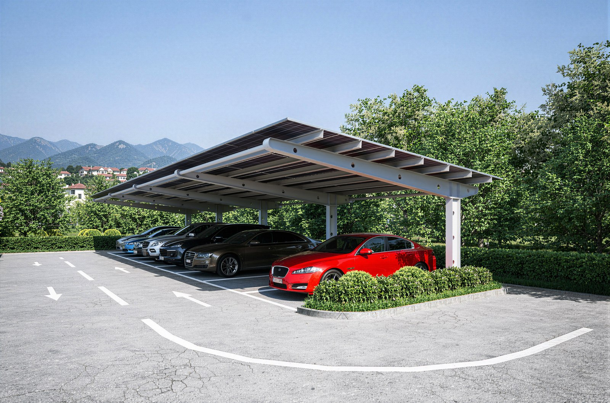
Clasic · Monopantă
Structura cea mai simplă și accesibilă din gamă — un singur acoperiș înclinat, sprijinit pe stâlpi laterali. Fără elemente în plus, doar protecție solidă.
Recomandat pentruO mașină, curți mici sau bugete care prioritizează funcționalitatea.
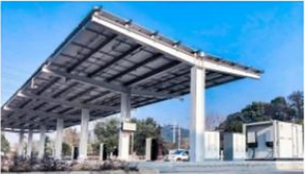
Clasic · Dublă pantă
Formă simetrică, tip acoperiș clasic de casă. Scurge apa și zăpada în ambele direcții, cu o distribuție mai bună a sarcinii pe structură.
Recomandat pentruProprietăți unde vrei ca și carportul „să semene" cu restul casei.
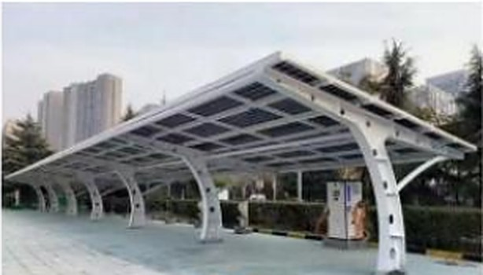
Clasic · Arcuit
Aceeași logică structurală ca monopanta, dar cu o linie curbă în loc de una dreaptă. Diferența e vizuală — un profil mai modern.
Recomandat pentruCine vrea funcționalitatea monopantei, dar un aspect mai arătos.
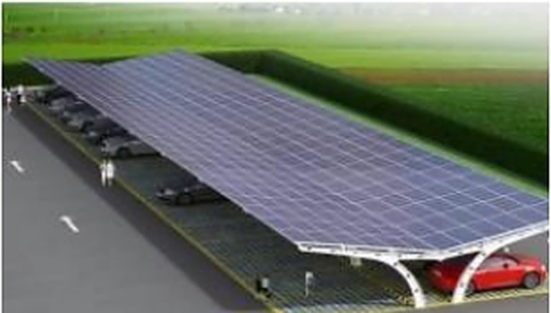
Clasic · Arcuit simetric
Varianta arcuită și simetrică — o formă care atrage privirea fără să pară supradimensionată. Potrivită pentru amplasamente vizibile din stradă.
Recomandat pentruLocuințe unde carportul e parte din fațadă, nu doar o anexă.
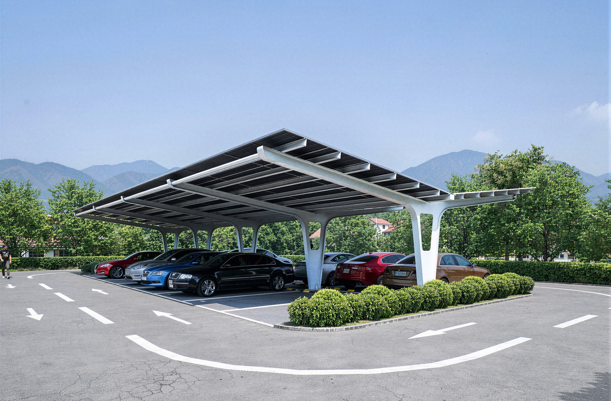
Arhitectural · Stâlp central
Un singur stâlp, poziționat central, susține întregul acoperiș. Zona din jurul mașinii rămâne complet liberă, fără coloane care să încurce manevrele.
Recomandat pentruCurți strâmte, alei înguste sau parcări unde fiecare centimetru contează.
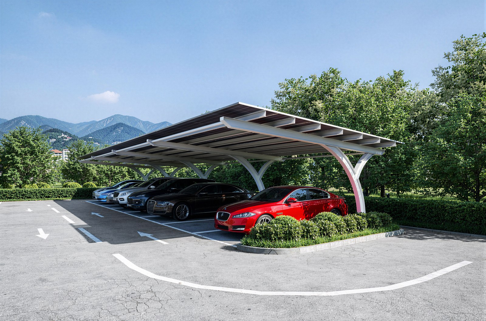
Arhitectural · Stâlp ramificat
Un singur stâlp se ramifică în puncte de sprijin, ca o structură organică. Cea mai statement piesă din gamă — gândită pentru locuri unde designul contează la fel de mult ca funcția.
Recomandat pentruReședințe premium, showroom-uri sau spații unde carportul trebuie să impresioneze.
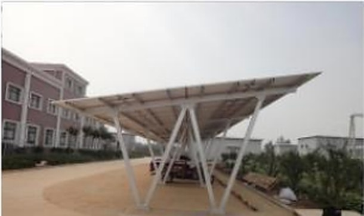
Arhitectural · Tip W
Structură modulară, cu acoperiș în forma literei W, gândită pentru șiruri lungi de locuri de parcare. Fiecare modul se sprijină eficient pe cel alăturat.
Recomandat pentruParcări comerciale, firme sau ansambluri cu multe locuri de parcare.
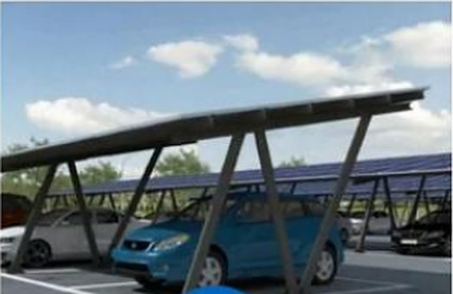
Arhitectural · Tip N
Cadru înclinat, asimetric, cu o linie dinamică ce iese din tiparul clasic. Rezistă bine la vânt lateral datorită unghiurilor de sprijin.
Recomandat pentruFirme care vor o parcare acoperită cu identitate vizuală proprie.
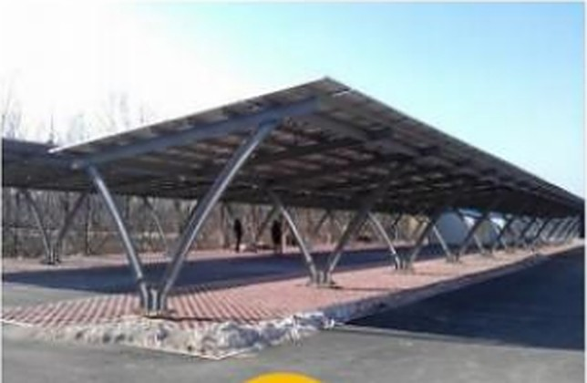
Arhitectural · Tip V
Stâlpi înclinați care se unesc într-un punct central, susținând acoperișul dintr-un reazem vizual concentrat. Aspect modern, sculptural.
Recomandat pentruZone reprezentative — intrări principale, showroom-uri, sedii de firmă.
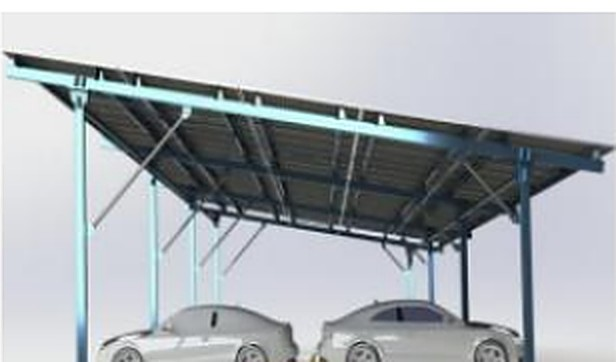
Compact · Versant unic
Versiune redusă ca dimensiune și greutate a monopantei clasice, gândită pentru vehicule ușoare, nu pentru autoturisme mari. Cost mai mic, montaj și mai rapid.
Recomandat pentruScutere, biciclete electrice, ATV-uri sau vehicule electrice ușoare.
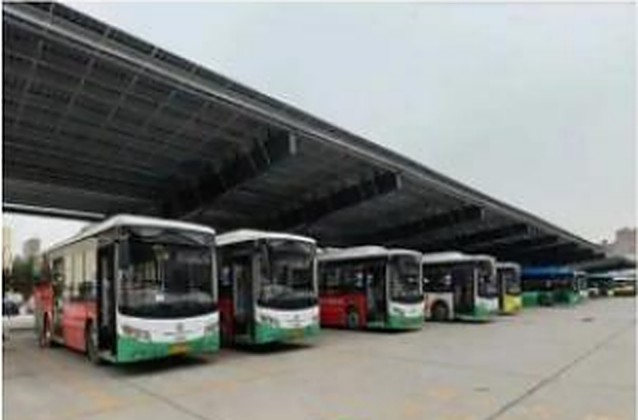
Capacitate mare · Deschidere largă
Structură cu deschidere mare, calculată special pentru înălțimea și lățimea autocarelor și camioanelor. Fără stâlpi intermediari care să blocheze manevrele.
Recomandat pentruFirme de transport, autobaze, flote de camioane sau autocare.
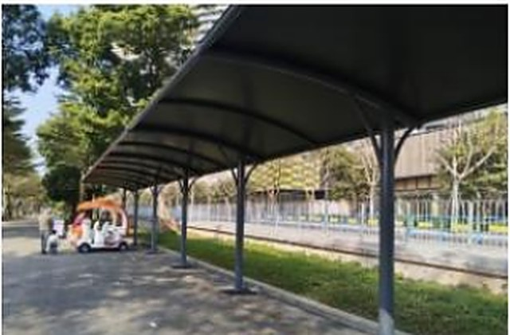
Capacitate mare · Membrană
Acoperiș din material textil tensionat, nu din panouri rigide — o soluție mai ușoară vizual, potrivită pentru spații publice sau semi-publice.
Recomandat pentruCampusuri, ansambluri rezidențiale sau spații publice unde forma contează.
Nu ești sigur ce model ți se potrivește?
Spune-ne câteva detalii despre teren și scop — îți recomandăm structura potrivită, gratuit, fără nicio obligație.